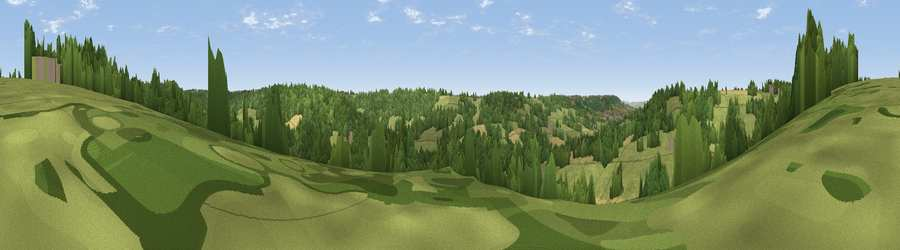

Viewpoint near Hemyock
#40636 in England · top 90% of its area beats it · near HemyockThe view, rendered

A 360° render of this exact spot computed from the terrain model, tree cover and land cover — summer colours, afternoon light, calibrated against photographs of famous viewpoints. Real trees, hedges and buildings will differ in detail.
The panorama
Grey silhouette: terrain skyline in each direction (720 bearings, Earth curvature and refraction included). Dashed green: skyline with trees (+15 m) and buildings (+8 m) as obstacles. Blue strip: how far the ground is visible on each bearing.
Where the view opens
Wedge length = distance to the farthest visible ground on that bearing (vegetation-aware). Rings at 10, 25 and 50 km.
What fills the view
52% grassland · 35% woodland · 12% cropland ·
Angular shares of the visible panorama (visual magnitude), not map area. Landscape diversity 0.43 (0–1 Shannon).
Key numbers
More beautiful places nearby
The staircase of upgrades: each row has a higher view potential than everything closer. Driving times are estimates from straight-line distance, calibrated against real road routing — check an actual route before setting out.
| Place | Direction | Drive | Score |
|---|---|---|---|
| Viewpoint near Hemyock | W · 2 km | ~5 min | 34.0 |
| Viewpoint near Hemyock | SW · 2 km | ~6 min | 39.2 |
| Viewpoint near West Buckland | NNE · 3 km | ~7 min | 71.2 |
| Viewpoint near West Buckland | N · 3 km | ~7 min | 73.9 |
| Viewpoint near Pitminster | NE · 4 km | ~8 min | 77.3 |
| Viewpoint near Broomfield | N · 17 km | ~30 min | 78.5 |
| Cothelstone Hill | N · 18 km | ~31 min | 82.1 |
| Viewpoint near West Bagborough | N · 19 km | ~33 min | 84.3 |
50.92687, -3.18341 · source: screening · position refined by local search. Computed location — check access rights before visiting.